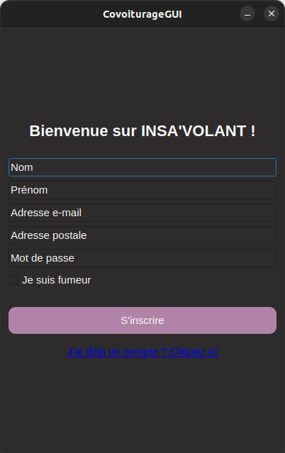

Un voyage d'équipe
Ce projet a été réalisé en groupe de six, sur un semestre. Dès le départ, le ton était donné : beaucoup d’idées, d’approches différentes, et une modélisation qui a nécessité... plusieurs tours de table !
Trouver un terrain d'entente n’a pas été facile, mais cette étape de réflexion collective a été une vraie richesse. Une fois l’architecture bien posée, nous avons réparti l’implémentation par binômes. J’ai personnellement travaillé sur la partie Controlleur et console.
L’interface a été un vrai défi : connecter les actions utilisateur à la base de données et aux différentes vues, en C++, avec Qt... Mais une fois en place, voir notre application fonctionner était une réelle satisfaction !
Objectif
Créer une application complète de covoiturage permettant à un utilisateur de proposer un trajet, réserver une place, et gérer ses annonces ou réservations, le tout dans un environnement local avec base de donnée.
Fonctionnalités principales
- Inscription et authentification utilisateur
- Ajout, modification et suppression de trajets
- Réservation en ligne de places disponibles
- Interface console et interface graphique Qt
- Consultation des trajets et profil utilisateur
- Système de base de données intégrée (fichiers ou SQLite)
Technologies utilisées
- C++ (modélisation orientée objet)
- Qt pour l'interface graphique
- SQLite ou fichiers pour la persistance
- Git pour le versionnage et la collaboration